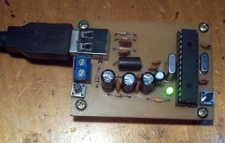
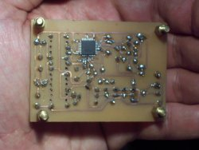
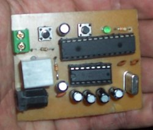
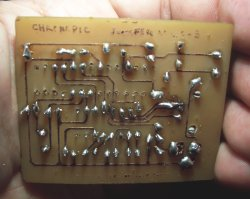

- Compra-Construcció del cronòmetre
- Construcció de la plataforma de contactes
- Cel·lules fotoelèctricas
1.- Compra-Construcció del cronòmetre
Chronopic 2.0 En preparació
| USB - frontal | USB - darrere |
|---|
|  |
 |
| Sèrie - frontal | Sèrie - darrere |
|---|
|  |
 |
Vell Chronopic 1.0
| Comprar Chronopic | Escriure a | Preu aproximat | Comentaris |
|---|
| a Espanya | andres@ifara.com | 70 Euros +IVA | Gravat en PCB |
| a Sudamèrica | juanfer@juanfer.com.ar | 150$ argentins +enviament | Placa casolana |
| Nota1: no ens fem responsables de que els Chronopics comprats funcionin. |
| Nota2: si desitja comercialitzar chronopics escrigui un correu a xaviblas@gmail.com. |
Construcció [Experts] Per a informació al voltant de la fabricació del cronòmetre llegir aquest correu: Documentación sobre Chronopic 1.0 y el Prototipo 1 (castellà). Construcció de cables per a Chronopic (castellà). Enregistrament de Chronopic amb ICPROG (castellà).
Alternativament, pot construir la Chronopic_juanfer (castellà) (més barata i més fàcil de fabricar).
|
2.- Construcció de la plataforma de contactes
L'instrument que permet saber si el subjecte està a l'aire o a terra pot ser una plataforma de contactes o un sistema de cèl·lules fotoelèctriques. Proposem el següent document amb les intruccions per a fabricar la plataforma de contactes:
De forma alternativa s'ha descrit una altra possibilitat de construcció de plataforma de contactes que
no ha estat provada o adaptada a ChronoJump:
3.- Cel·lules fotoelèctriques
Consulti
fotocèl·lules (castellà).


{kind=link}
{kind=link}
{kind=link}
{kind=link}